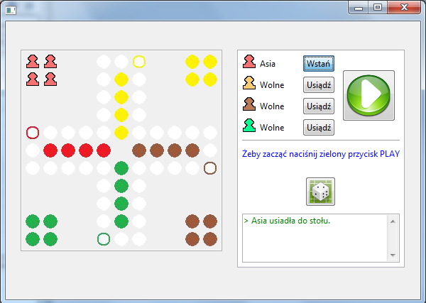

Serwer
Żeby uruchomić serwer gry, należy pobrać pakiet zawierający pliki wykonywalne. Znajduje się on w dziale download.
Po rozpakowaniu uruchomić plik :
chinczyk-server.exe
Pojawi się okienko:
Zielony przycisk play uruchamia serwer. Czerwony przycisk stop, zatrzymuje serwer. Serwer nasłuchuje na porcie 5555, więc należy się upewnić, że żadna inna usługa nie jest uruchomiona na tym samym porcie.
Klient
Należy pobrać aplikację klienta z działu download.
Uruchomić plik wykonywalny
chinczyk-klient.exe
Pojawi się okienko:
Zielony przycisk play służy do uruchomienia gry lokalnej (bez łączenia z serwerem). Zielony przycisk connect służy do połączenia z serwerem. Po połączeniu z serwerem wygląd okna w aplikacji klienckiej będzie wyglądał podobnie do poniższego obrazka:
Po podłączeniu pojawiają się dodatkowe opcje: ikonka drzwi umożliwia utworzenie nowego pokoju, czerwona ikonka 'disconnect' służy do odłączania się od pokoju. Niebieska strzałka służy do dołączenia się do pokoju. Po podłączeniu do pokoju pojawi się okno pokoju:

Gracz może usiąść do stołu, kiedy wszyscy gracze się zdecydują grać wciskają duży zielony przycisk 'Play' i gra się rozpoczyna. Typowy wygląd pokoju w trakcie gry zaprezentowany jest na poniższym obrazku: